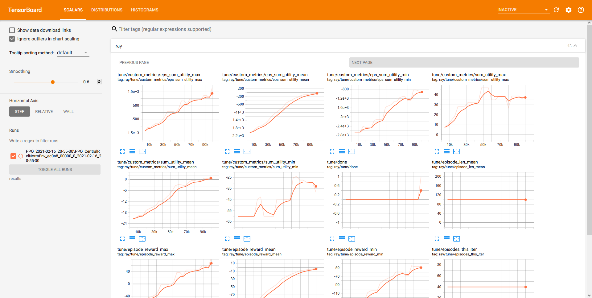

This post is incomplete. See the ongoing discussion for details.
In this blog post, I use reinforcement learning (RL) to solve a custom optimization task (here, related to coordination in mobile networks). To this end, I use the scalable RL framework RLlib, which is part of Ray, and a custom environment, which implements the OpenAI Gym interface. As RL algorithm, I use proximal policy optimization (PPO), which is implemented in RLlib and configured in my environment.
I first show how to train PPO on my environment when running locally. Then, to speed up training, I execute training on a private/on-premise multi-node cluster.
While it is simple in principle, it took me a while to go from running RLlib and my custom environment locally to getting it to work on a private cluster. I’m hoping this guide is useful for anyone in a similar situation. In this blog post, I focus on the general workflow but use my specific environment as an example. I will cover details about my RL approach and environment in a future blog post.
Training an RL Agent Locally
Setup
Installation requires Python 3.8+ and should work on Linux, Windows, and Mac. Inside a virtualenv, install RLlib with
pip install ray[rllib]Then install the custom environment. Here, DeepCoMP as described in the readme:
pip install deepcompTest the installation with deepcomp -h, which should show the available CLI options.
Training
Once installation is complete, train a centralized RL agent with PPO in an example scenario. Note, that training will take a while (around 15min on my laptop), so running the command inside a detachable GNU screen or tmux session makes sense.
deepcomp --agent central --train-steps 100000 --env medium --slow-ues 3This trains a centralized PPO agent for 100k training steps running on a single core. To use more cores, set the corresponding value via CLI argument --workers. The additional arguments --env and --slow-ues configure my custom DeepCoMP environment (more about that in another blog post). During training, updates should be printed on screen and progress can be monitored with TensorBoard. To start TensorBoard, run (in a separate terminal):
tensorboard --logdir results/PPO/Here, the TensorBoard files are in results/PPO/, but this depends on the environment. Once started, TensorBoard can be accessed at localhost:6006.

Results
In the case of my environment, results are saved in the results directory on the project root (where deepcomp is installed) by default. To specify a custom result path, use the --result-dir CLI argument, which accepts relative paths.
Files in folders prefixed with PPO contain neural network weights, configuration, log, and progress files generated by RLlib. They are useful for analyzing training progress or when loading a trained agent for inference (--test arg) or continued training (--continue). Additionally, folders test and videos are generated by DeepCoMP and contain easy-to-parse testing/evaluation results and rendered videos, depending on the DeepCoMP CLI args (--eval and --video).
Of course, this is just an example. Results are saved differently for each problem and environment.
Scaling to Training in a Private Cluster
The nice thing about RLlib is that it can seamlessly scale from running locally to a large cluster.
Preparations
While there are virtually no code changes required in the environment, some preparation steps were necessary for me to get RLlib to work on our private/on-premise cluster.
Cluster Configuration
The Ray cluster configuration is saved in a YAML file. My configuration file is here.
The most relevant fields concern information about the private cluster:
provider:
type: local
head_ip: <head-machine-ip-or-address>
worker_ips:
- <worker1-ip>
- <worker2-ip>Here, type: local indicates that the cluster is local/private/on premise. The head IP or address points to the head node, i.e., the machine that should coordinate the cluster. To execute commands and train my RL agent, I will later attach to the head node, start training and TensorBoard, and finally retrieve results. The workers are other machines in the cluster on which the training is executed.
Depending on the number of workers listed under worker_ips, also set min_workers and max_workers to the same value.
For authentication when logging into the workers and distributing computation across them, also configure auth:
auth:
ssh_user: stefan
# Optional if an ssh private key is necessary to ssh to the cluster
# This is the SSH key of the local laptop, not of the head node
ssh_private_key: ~/.ssh/id_rsaInstallation
To run code on the workers, install ray[rllib] and the custom environment deepcomp on each worker machine of the cluster. All nodes in the cluster must have the same Python and same ray version (check with --version inside the virutalenv).
Maybe this can be avoided, eg, by using Docker images that are pulled automatically?
SSH Access
The head node needs ssh access to all worker nodes. Ensure the head node’s public SSH key is registered as authorized key (in ssh/authorized_keys) in all worker nodes. The head node’s private key path should be configured in the cluster.yaml.
In fact, the private key configured in cluster.yaml is the private key of the local laptop that controls the cluster. Not the head node.
ray command
The ray command needs to be available on all cluster nodes. If the ray command is not available on the cluster, trying to start the cluster will crash with the error Command 'ray' not found ... Failed to setup head node..
If ray is installed in a virtual environment, the easiest option is to automatically source the virtualenv on each login. Particularly, adding the following line to .bashrc will source the virtualenv:
source path/to/venv/bin/activateWhere path/to/venv needs to point to the virtualenv. The change is in effect after log out and back in.
Then ray --version should run without errors.
Connect to Ray cluster
To ensure that running ray connects to the same cluster and the same Redis DB, use ray.init(address='auto'). Without argument address='auto', execution on the cluster does not work.
However, for me, adding address='auto' breaks local execution. Hence, I added an optional CLI argument --cluster to my custom deepcomp environment, which adds address='auto' for running the environment on a cluster without code changes.
Starting the Ray Cluster
On the local machine
Start cluster:
# start the cluster (non-blocking)
ray up cluster.yaml
# forward the cluster dashboard to the local machine (this is a blocking command)
ray dashboard cluster.yamlView dashboard: http://localhost:8265
This currently doesn’t work for me. It only shows the head node, not the workers.
Connect to cluster and run command for training. Note, you can attach but not detach. Thus, better to run this in a screen/tmux session.
ray attach cluster.yaml
deepcomp --agent central --train-steps 100000 --env medium --slow-ues 3 --cluster --workers XYOnce training completed, detach/close terminal with Ctrl+D.
Monitoring Training Progress
- Training updates should be printed inside the attached terminal
- On the cluster’s head node,
htopshould showray::RolloutWorkerrunning. - On the cluster’s worker nodes,
htopshould showray::PPO()::train()(or similar) to indicate the training is running. - Monitor progress with Tensorboard running
tensorboard --host 0.0.0.0 --logdir results/PPO/on the cluster’s head node. Then access on<head-node-ip>:6006.
This currently doesn’t work for me. It seems like the program is only running on the head nodes, not at all on the workers.
Retrieving Training & Testing Results
From the local laptop, use ray rsync-down to copy the result files from the cluster’s head node to the local laptop:
# ray rsync-down <cluster-config> <source> <target>
ray rsync-down cluster.yaml ~/DeepCoMP/results .Will be copied to local directory into results.
Terminating the Cluster
From the local laptop:
ray down cluster.yamlDebugging
If the process above does not work, the logs may contain helpful information for debugging the problem. To print the logs, run on the cluster’s head node:
cat /tmp/ray/session_latest/logs/monitor.*To print a status overview of the cluster:
ray status --address <address:port>Where <address:port> belongs to the cluster and is displayed when starting it with ray up cluster.yaml (after To connect to this Ray runtime from another node, run ...).
Common Errors
Command 'ray' not foundwhen trying to start the cluster- The
raycommand is not available on the head node after SSH. One solution is to source the virtualenv withrayin the.bashrcor to installraysystem-wide.
- The
- Repeatedly
autoscaler +4m36s) Adding 1 nodes of type ray-legacy-head-node-type.when training on the cluster- ??
- When trying to run code on the cluster after
ray attach cluster.yaml:(raylet) OSError: [Errno 98] Address already in use- ?? Is the redis server already running; something wrong with the cluster ??
- Stopping and restarting the cluster seems to fix the problem: Detach, then from the laptop stop the cluster:
ray down cluster.yaml, then start it againray up cluster.yaml
- All load seems to be just on the cluster head and nothing is distributed to the workers (when observing with
htop)- ??
- In the logs:
ERROR monitor.py:264 -- Monitor: Cleanup exception. Trying again...1 random worker nodes will not be shut down. (due to --keep-min-workers)
What Next?
- Test with multiple nodes on the cluster. Is there a real speedup?
- Test running on cluster without installing env (and ray?) on workers
- Some basic tests and proper CI (check example command from readme); update Readme with cluster instructions and link to blog; publish new release
- Let Ray team know to distribute the blog post: https://discuss.ray.io/t/use-of-ray-logo-in-blog/797
- Measure time to complete training when training on 1 core; 20 cores on 1 machine; 20 cores each on multiple machines
- 15min on 1 core
- 5 min on 20 core
- 4 min on 40 core